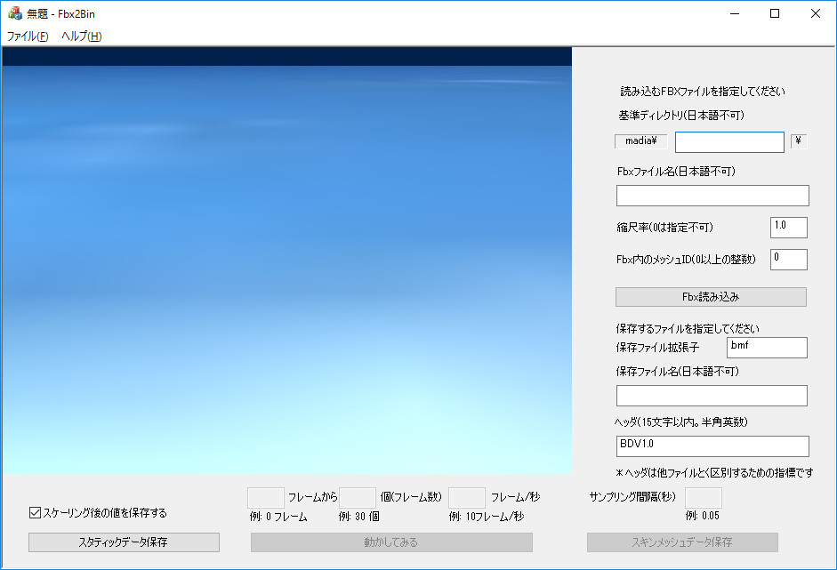
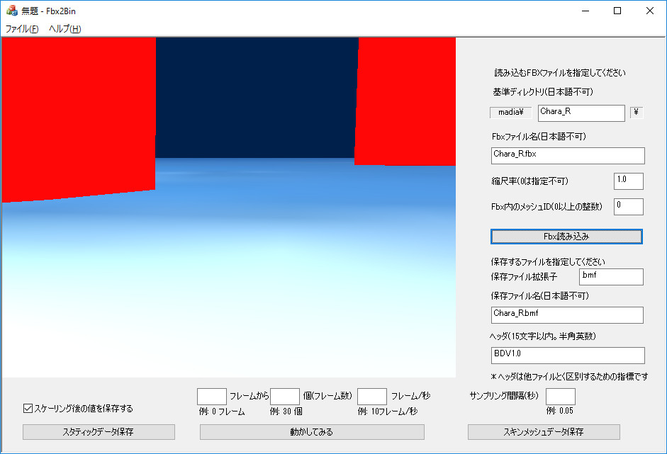
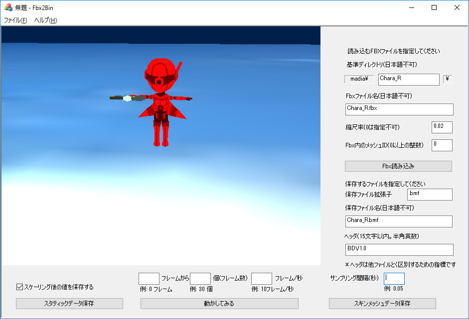
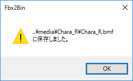

００１．Fbx2Binを実行する
ソリューションを開いて、ビルド、実行する
Fbx2Binディレクトリの
Fbx2Bin.slnをビルドし、実行すると、以下の画面が現れます。

図0001a
XBoxコントローラで、画面の表示角度を変えることができます。
Fbxの読み込み
まず試しに、以下のように入力して「Fbx読み込み」をクリックしてみましょう。

図0001b
このように、なんだかわからない画像が表示されます。これは読み込むモデルのサイズが大きいためで、「縮尺率」を
0.02に設定して、もう一度「Fbx読み込み」をクリックしてみましょう。その画面が以下です。

図0001c
サンプルに用意したFbxデータはスキンメッシュになっています。以下のように、アニメーション情報を入力して、「動かしてみる」ボタンをクリックしてみましょう。その状態は以下です。モデルがアニメーションしているのがわかります。
図0001d
独自データの保存
このツールは、
DxBase2016フレームワークの
サンプル308、309で紹介したように、モデルをゲームに取り込むデータ（独自データ）を作成するツールです。
データは
サンプルという単位で保存しますので、
サンプル数というのが重要になります。
以下のように、
サンプル間隔を
0.05として保存してみましょう。これは、1秒間に20個のサンプルを保存することになります。（0.05は20分の1秒です）。
値を
0.05に設定したら
スキンメッシュデータ保存ボタンをクリックします。すると以下のようなダイアログが出ます。

図0001e
ダイアログのように
media/Chara_RディレクトリにChara_R.bmfという名前で保存されます。このデータは、
DxBase2016のサンプル309で再生できます（サンプルに合わせてアニメーションは調整する必要があります）。
また、
スタティックデータ保存でスタティックモデルとして保存できます。このデータは
DxBase2016のサンプル308で表示できます。
以上、非常に簡略的ですが、Fbx2Binによる、データ変換と保存を説明しました。次項では、Fbx2Binの保存するデータ形式について説明します。